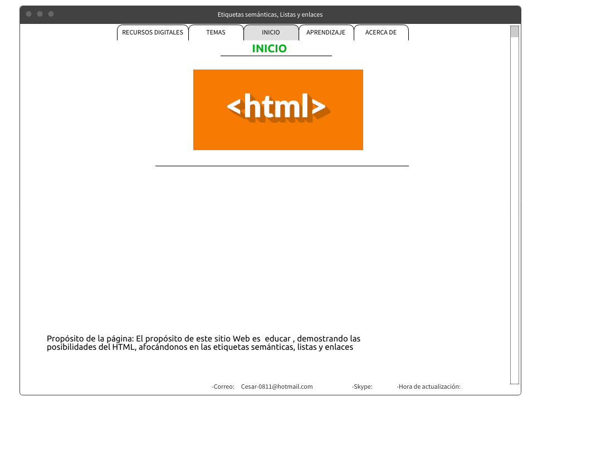

<!DOCTYPE html>
<html lang="es">
<head>
    <meta charset="UTF-8">
    <meta http-equiv="X-UA-Compatible" content="IE=edge">
    <meta name="viewport" content="width=device-width, initial-scale=1.0">
    <title>Fase 2 diseño y construcción I</title>
</head>
</html>
<body>
<header>Etiquetas semánticas, Listas y enlaces</header>  
<ul id="menu">
    <li>Inicio</li>
    <li>Temas</li>

<ul><li>Etiquetas semánticas</li>
    <li>Listas</li>
    <li>Enlaces</li></ul>
    <li>Recursos digitales</li>

<ul><li>recurso 1</li>
    <li>recurso 2</li></ul>
    <li>Aprendizaje</li>
    <li>Acerca de</li>
<ul><li>Autor</li></ul>

</ul>  
<br> 
<section>Propósito del sitio:</section>      
<article>Borrador
<br> La etiquetas semanticas Añaden un valor semantico y estructural a la pagina, dando forma, ordenando y diferenciando las diferentes partes que la componen
(cabecera, pie, navegación, etc) Algunos ejemplos son "Header, Article , hgroup, section , nav y footer"
<br>
<br>Las listas, las listas nos permiten crear conjuntos de elementos, ya sean listas ordenadas, desorndenadas, con un orden o listas de definición
<br>
<br> Los enlances son el medio por el cual se puede comunicar la web con otros sitios,archivos o etc la etiqueta que se usa para marcarlos es " a /a " y el atributo es href= donde se escribe la ubicación del archivo
</article>
<br>

<footer>Correo:  Cesar-0811@hotmail.com   Cel:3208422259   Fecha:18/07/2021</footer>
</body>
</html>